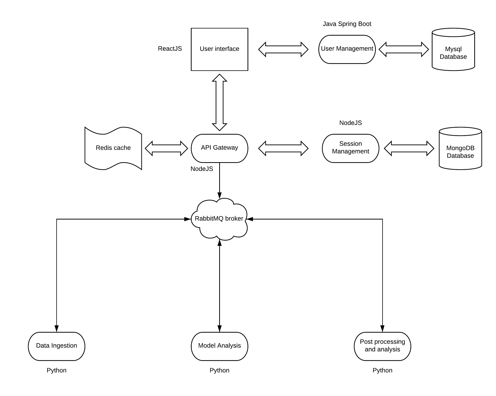
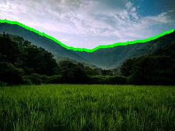

● Developed a Python module for multi-threaded Leader Election in a Distributed Architecture using ConfigMap lease object locks.
● This will allow Python developers to create highly available services without depending on external tools.
● Pull request: Click link (Review in progress)

Given an input of radar location and dates, this system computes a graph that describes the amount of expected rainfall in that region using Nexrad radar data.
Designed a Fault tolerant and scalable microservice architecture for the system consisting of the following services:
1. User management - A microservice that handled authentication, also to be used as a user registry.
2. API Gateway - To create a single point of access to the system and it's utilities.
3. Session Management - A microservice that stored user sessions and results.
4. Data Ingestion - A microservice to acquire Nexrad radar data from an Amazon S3 bucket.
5. Model Analysis and Post processing - These microservices were used to extract knowledge and compute precipitation graphs from the ingested data.
Containerized all services using Docker and implemented a CI/CD pipeline for a Kubernetes cluster deployed on OpenStack cloud using Jenkins.
Also, integrated Istio service mesh and exposed dashboards like Kiali and Grafana to gain visibility and Telemetry insights of the system.
Technology stack: Java Spring, Node.js, Python, React.js, MySQL, MongoDB, RabbitMQ, Jenkins, HTML, CSS, Docker, Kubernetes, Redis, OpenStack, Jetstream

An Alpha-Beta testing web application where requests are evenly distributed between two versions of a webpage in A/B testing style. A user will get either a green or a violet webpage(equal probability to get either) and then will keep getting the same webpage unless cookies are destroyed. This can be used to drive user analytics for a web application.
Used Javascript and Cloudflare Workers api technologies to develop and deploy this application. You can view this application at:
https://sumantintern.sumant.workers.dev/
Technology stack: Javascript, Cloudflare workers

A Computer Vision utility that finds and paints the horizon in a given image using Baye's nets and the Viterbi algorithm. For every image, you can see the resulting horizon detected by the utility using - Baye's nets, Viterbi algorithm without feedback and Viterbi algorithm with human feedback i.e information of a pixel that is surely on the horizon.
Language: Python

Implemented Topic Modelling using Latent Dirichlet Allocation (LDA), to find general complaints and negative feedback given by customers for restaurants, obtained from sentiment analysis. Grouped segments of restaurants based on cuisine, customer sentiment, user check-in patterns, pricing and other attributes to identify competitors using Hierarchical Clustering (Agglomerative) and recommended popular items/dishes in a restaurant that customers like using Named Entity recognition.
Predicted the class of object in the image out of 10 possible classes.
Used two dense hidden layer with 512 neurons. using RELU as the activation function and a Dropout with a value of 0.2.
Also used RMSprop for optimization.
and Softmax activation function for the output layer.
Testing accuarcy: 85 %
Language: Python
Dataset: Fashion MNIST dataset
A Decision Tree classifier to classify a given image into its correct orientation.
Dataset: Flikr photo dataset, Number of classes: 4
Language: Python